Which area suits you, weather by month, getting around, things to do and what it actually costs, everything you need to plan a trip to Mexico's Caribbean coast.
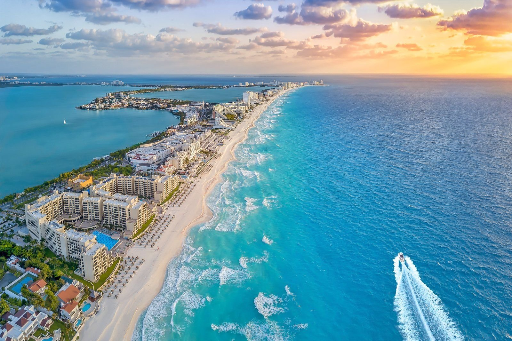
Cancun, Playa del Carmen and the wider Riviera Maya all sit on the same stretch of Mexico's Caribbean coast and share one gateway airport, but they're genuinely different trips. Cancun is a purpose-built resort city with a Hotel Zone strip of big all-inclusives. Playa del Carmen is a proper town with a famous pedestrian street, a bit more independent and walkable. The Riviera Maya is the whole coastline running south from there, taking in Tulum, Akumal and dozens of smaller resort towns, more spread out and a bit more laid-back.
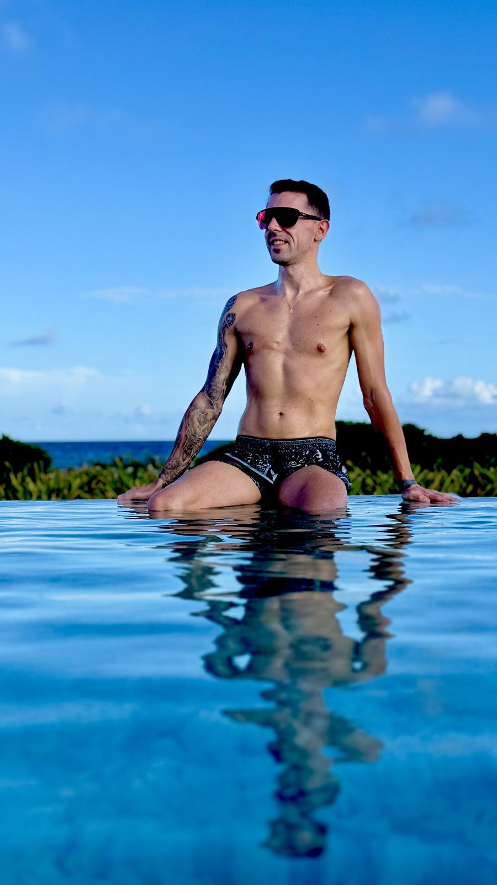
New to Mexico or after an easy, everything-sorted trip? Base yourself in Cancun's Hotel Zone. Want to walk to restaurants and explore independently? Playa del Carmen. After something quieter with cenotes and ruins on your doorstep? Look further down the Riviera Maya towards Akumal or Tulum.
It's a long flight for a short trip, so this one works best as seven nights or more. A week is enough to properly relax on one base with a day trip or two; ten to fourteen nights gives you room to split your time between, say, Cancun and Playa del Carmen, or add on Tulum and a couple of cenotes without feeling rushed.
Cancun's Hotel Zone suits families and anyone who wants an all-inclusive resort with everything on site. Playa del Carmen suits couples and friends who want to walk to dinner and explore under their own steam. The wider Riviera Maya, particularly Tulum and Akumal, suits couples after something quieter and more nature-focused, cenotes, ruins and turtle swims rather than nightlife.
Cancun International Airport (CUN) is the gateway for this entire stretch of coast, whichever of the three areas you're actually staying in. Direct flights from the UK take around 10 hours 30 minutes, operated by carriers including British Airways, Virgin Atlantic and TUI.
From the airport, it's roughly 20–40 minutes to Cancun's Hotel Zone, and around 45 minutes to an hour and a quarter down the coast to Playa del Carmen, with Tulum and the southern Riviera Maya adding another 30–45 minutes on top of that.
Book a private transfer in advance rather than relying on the taxi rank. Taxis at Cancun airport aren't metered and prices are inconsistent, whereas a pre-booked transfer is a fixed price with a driver waiting for you at arrivals.
This stretch of coast has a tropical climate: warm all year round, with a drier winter and a wetter, more humid summer. Hurricane season officially runs 1 June to 30 November, peaking in September and October, though a direct hit on any given trip is genuinely uncommon.
| Month | Avg high | Avg low | Sea temp | What to expect |
|---|---|---|---|---|
| January | 27°C | 20°C | 26°C | Warm, dry, one of the best months to visit |
| February | 28°C | 20°C | 26°C | Still dry and reliably sunny |
| March | 29°C | 21°C | 26°C | Warming up, dry, Spring Break crowds in resorts |
| April | 30°C | 22°C | 27°C | Hot and dry, sea warming nicely |
| May | 31°C | 24°C | 28°C | Hot, humidity building, showers becoming more likely |
| June | 32°C | 25°C | 29°C | Hot and humid, wet season and sargassum begin |
| July | 33°C | 25°C | 29°C | Hot, humid, afternoon storms, peak sargassum |
| August | 33°C | 25°C | 30°C | Hottest month, humid, peak sargassum |
| September | 32°C | 24°C | 29°C | Wettest month, hurricane season peak |
| October | 31°C | 23°C | 29°C | Still hurricane season, rain easing later in the month |
| November | 29°C | 22°C | 28°C | Drying out, hurricane season closes end of month |
| December | 28°C | 21°C | 27°C | Dry, warm, one of the best months to visit |
Figures are long-term monthly averages for the Cancun / Riviera Maya area.
November to April is the sweet spot: hurricane season is closed or closing, the sea is calmest, and there's little to no sargassum seaweed on the beaches. January and February are the driest and quietest of all. If you can, avoid June to September, when sargassum is at its heaviest (Tulum's open coastline gets hit hardest, Cancun's Hotel Zone and Cozumel tend to fare better) and hurricane season is live, though September and October can still work well for value if you keep an eye on the forecast and book flexible.
From the airport, an ADO bus is the cheapest way into Cancun's Hotel Zone (around 170 pesos, roughly £7) or on to Playa del Carmen (around 250 pesos, roughly £10, 1hr 15min, though it only stops at the bus station rather than your hotel). A pre-booked private transfer costs more but drops you directly at your hotel door, generally the better option with luggage and kids in tow. Taxis and Uber both operate, but coverage and pricing are patchier the further south you go.
Once you're there, Cancun's Hotel Zone has a frequent local bus running its length. Playa del Carmen is walkable, with taxis for anything further. To properly explore, hop between towns, or reach cenotes and ruins that aren't on a tour route, hiring a car is the most flexible option, Mexico drives on the right, and an international driving permit alongside your UK licence is worth carrying.
Three genuinely different areas along the same coastline, so it's worth picking the right one for what you're after rather than just the cheapest flight and hotel combination.
A 22km strip of beachfront all-inclusives between the lagoon and the Caribbean Sea. The easiest, most convenient option, closest to the airport, with buses running the length of the strip and nightlife and shopping on the doorstep.
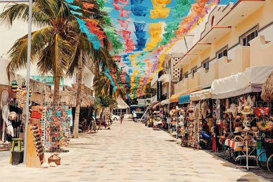
A proper town built around Fifth Avenue, a pedestrianised strip of shops, bars and restaurants running parallel to the beach. More independent than Cancun, with the Cozumel ferry, cenotes and Tulum all within easy reach.
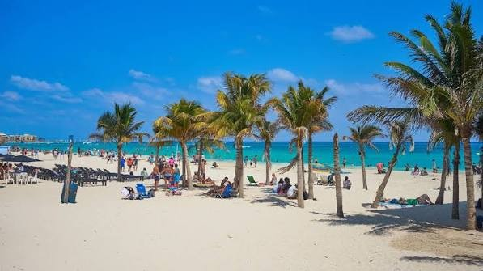
The quieter stretch of coast running south of Playa, best known for swimming with sea turtles at Akumal Bay. Fewer big resorts, more low-key hotels, and a good base for cenotes without straying too far south.
The most laid-back and boho of the four, with clifftop Mayan ruins over the sea and a stretch of coast lined with smaller, design-led hotels. Further from the airport, and the coastline here takes the brunt of any sargassum.
The bookable tours and activities Jake would actually recommend for anyone based in Cancun itself.
And the ones worth booking if you're based further down the coast, around Playa, Akumal or Tulum.
Book cenotes and Chichen Itza tours for the morning wherever you can, both get hot, humid and busy with tour buses by early afternoon.
A few of the highlights worth building a day around, beyond the resort pool.
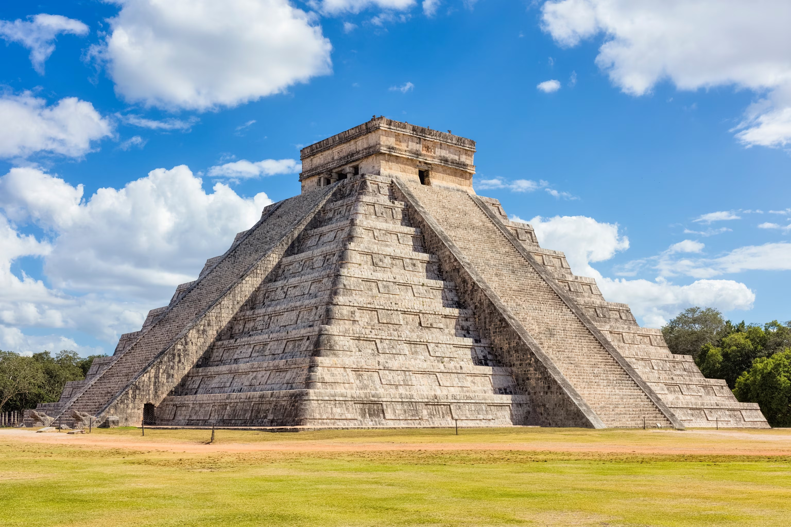
One of the New Seven Wonders of the World, around 2.5 hours inland from Cancun. Go early to beat both the heat and the tour buses, and combine it with lunch in nearby Valladolid. Expect a long day out either way, and take a hat and suncream, there's very little shade once you're on site.
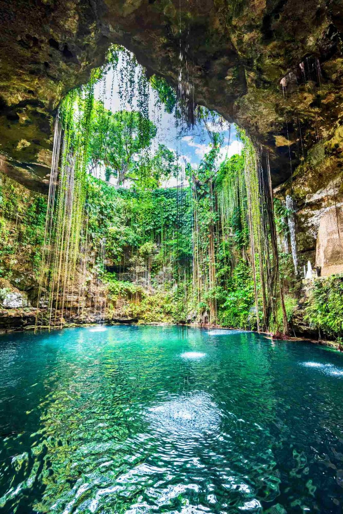
Natural freshwater sinkholes found all over the Yucatán, some open-air, some in caves, all a refreshing break from the sea at a steady 25°C. Dos Ojos and Gran Cenote, both near Tulum, are two of the best known.
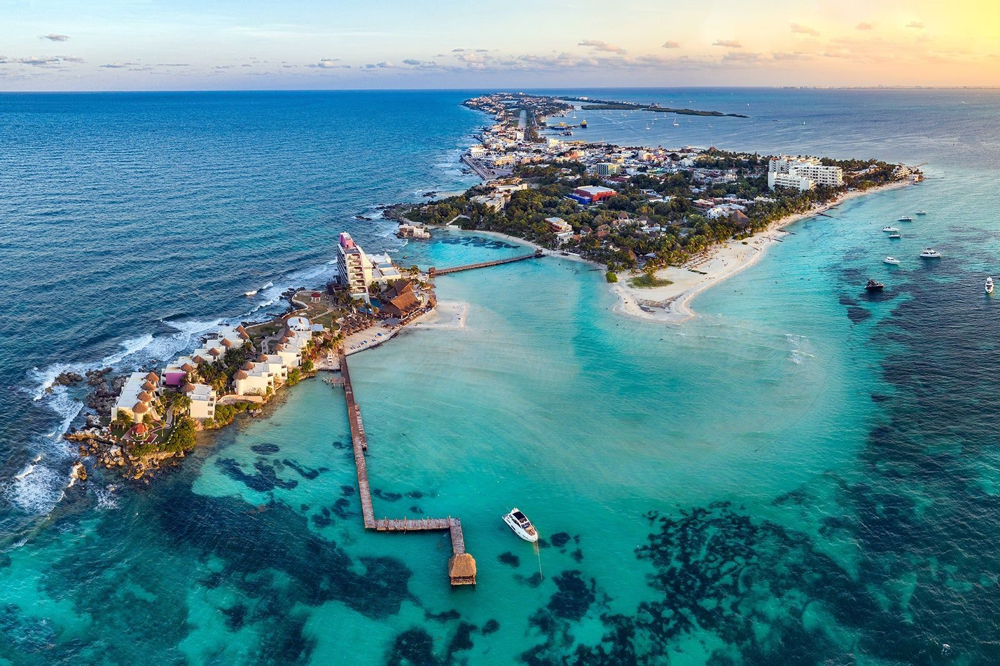
A small, laid-back island 20 minutes by ferry from Cancun, best known for Playa Norte, one of the calmest, most swimmable beaches on this whole coast. Easily done as a half or full day trip.
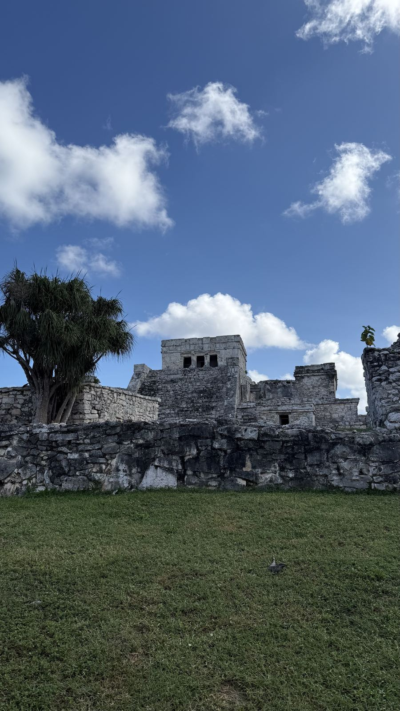
The only major Mayan site built right on the coast, with clifftop views over the Caribbean. Smaller than Chichén Itzá so it doesn't need a full day, and easy to combine with a cenote nearby.
This isn't just a beach and ruins destination, there's some proper wildlife worth building a day around too.
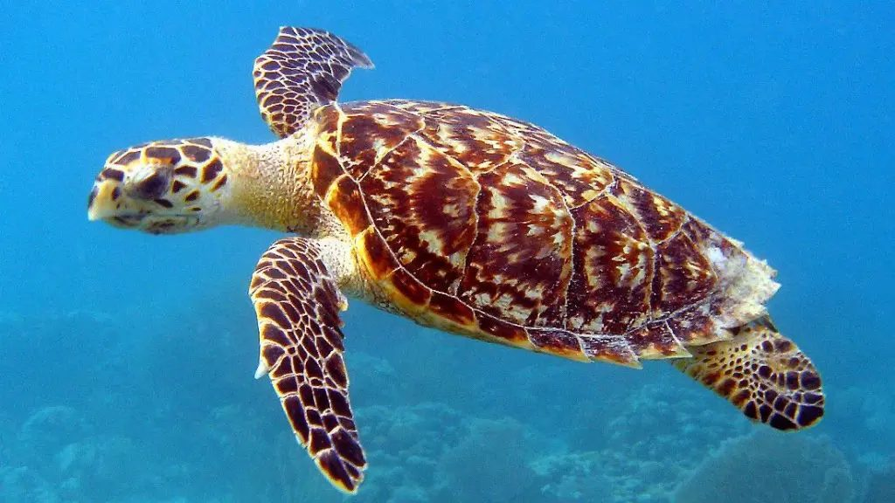
Akumal Bay, about halfway down the Riviera Maya, has resident green and loggerhead turtles you can snorkel with year-round, thanks to the seagrass they feed on. Nesting season runs May to November, so sightings are at their best then, and early morning (6–9am) beats the crowds and gives the calmest, clearest water.
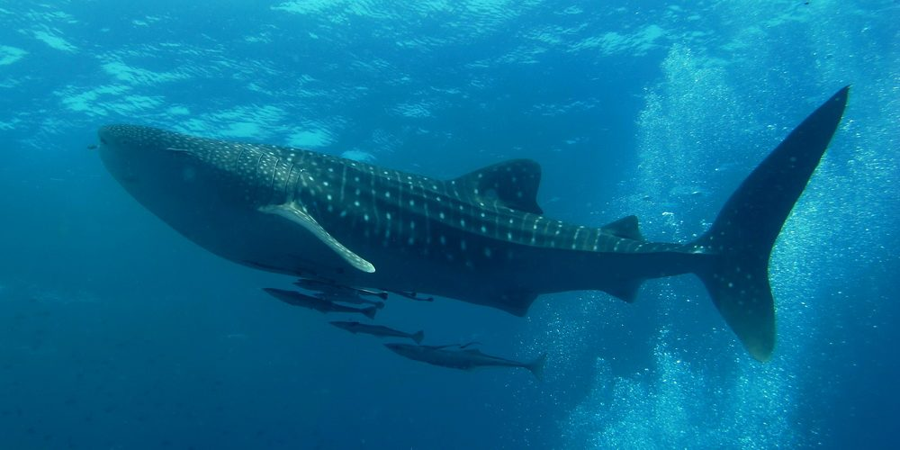
The world's largest fish gather off the coast north of Cancun and Isla Mujeres from June to September, with licensed tours offering near-guaranteed sightings. A genuinely once-in-a-lifetime thing to swim alongside.
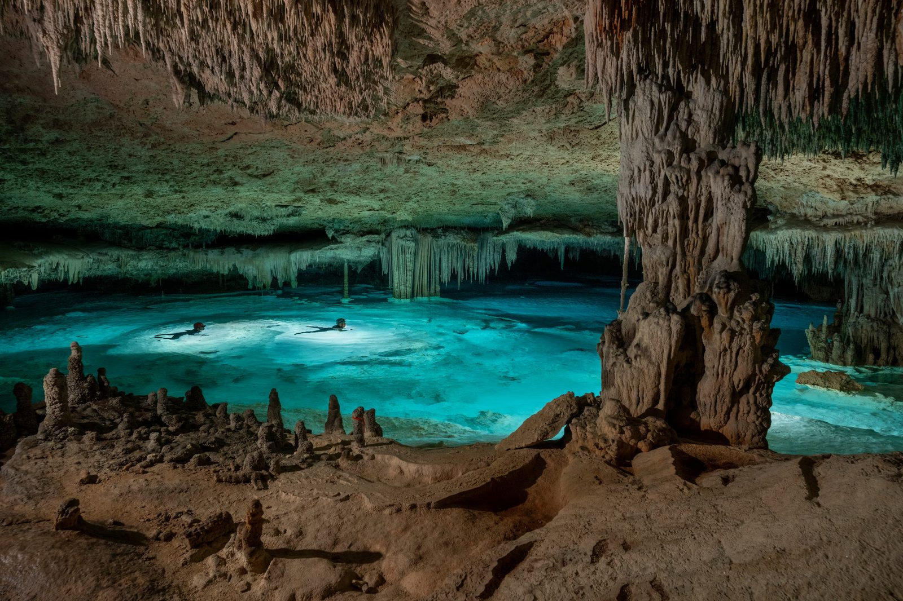
Beyond the swimming, cenotes are home to catfish, turtles and, in the right spots, blind cave fish that have adapted to total darkness. Look up too, a lot of cenotes have bats roosting in the cave ceiling.
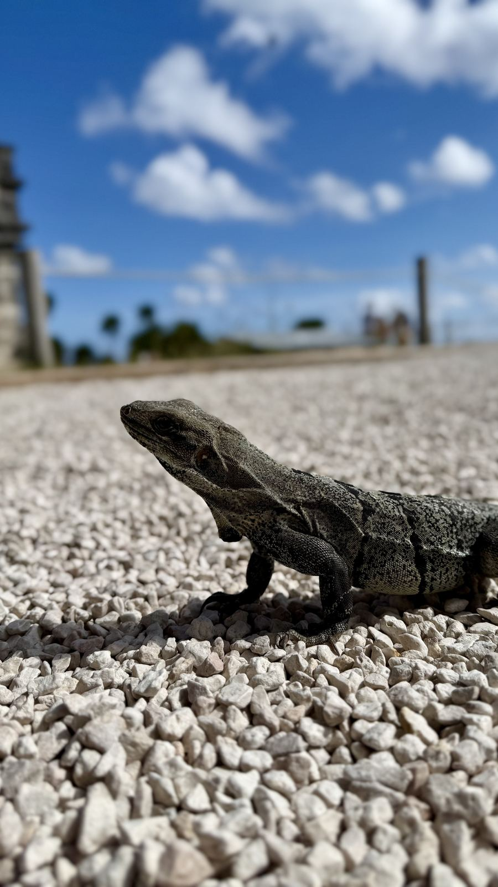
Iguanas sunning themselves on the stones are a near-guaranteed sight at Tulum and Coba, and if you head inland to the jungle around Chichén Itzá or Coba, keep an eye and ear out for toucans and howler monkeys.
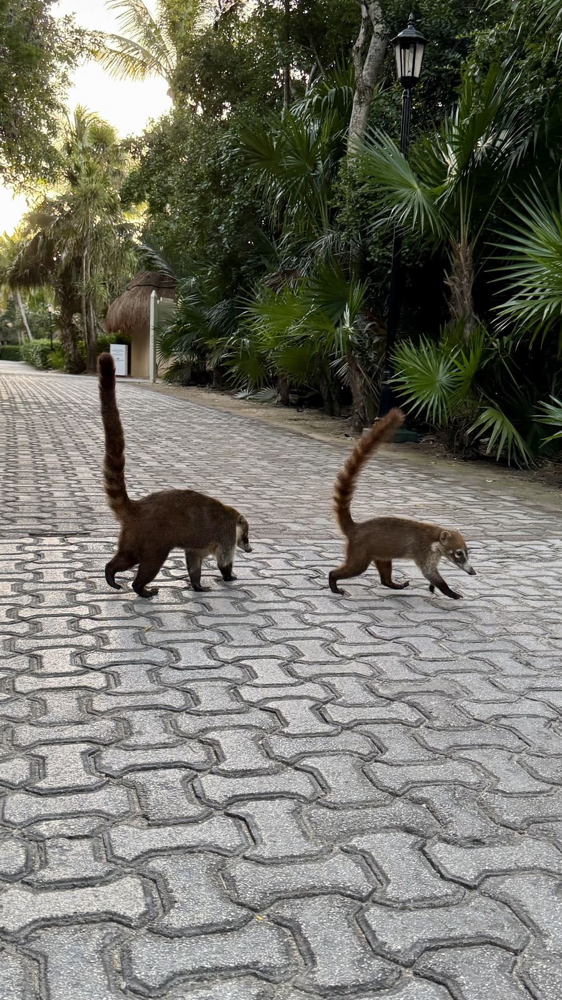
Raccoon-like, long-snouted and usually travelling in small troops, coatis are a common sight snuffling around Tulum, Coba and Xcaret. They're used to people, so keep food out of reach and admire rather than feed them.
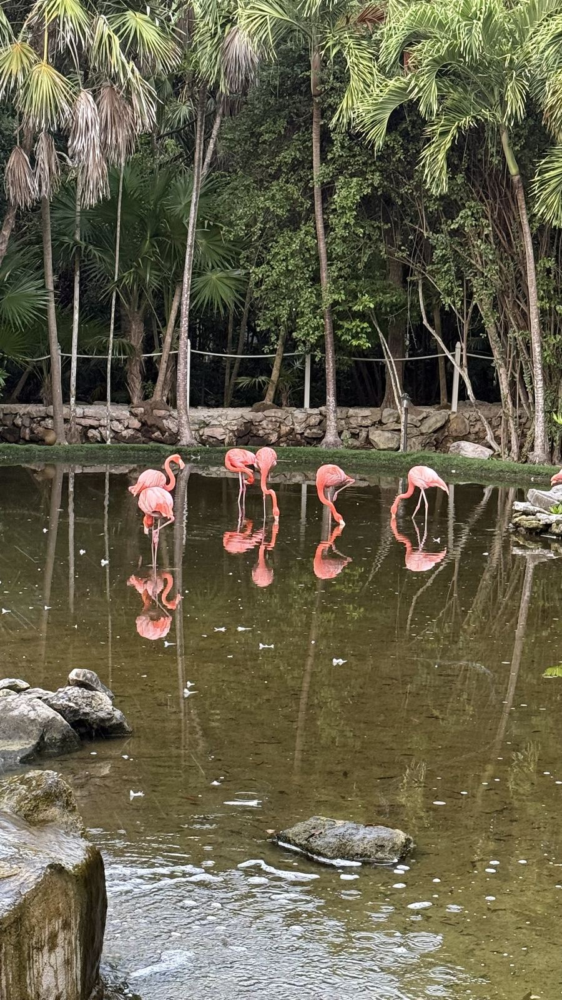
The Yucatán's lagoons and coastal reserves, Río Lagartos in particular, are home to flocks of wild pink flamingos, best seen on an early boat tour, alongside herons and egrets. Xcaret's aviary is a good, easier way to see them up close if you're not heading that far north.
Swim with turtles at Akumal early morning if you can, it's calmer, clearer and far less crowded than by mid-morning once the tour groups arrive.
A few extra things worth knowing before you go, on top of everything above.
Raw fish or prawns "cooked" in lime juice with chilli, onion and coriander, served cold. It sounds like it shouldn't work, but it's fresh, zingy and everywhere along this coast, definitely one to try rather than sticking to resort menus the whole trip.
An adventure park near Playa del Carmen from the same people behind Xcaret: zip lines over the jungle, amphibious vehicles through caves, and rafting and swimming through underground rivers. A proper full day out, and a good one for anyone after more adrenaline than a beach day gives you.
Cancun's famous nightclub and cabaret show rolled into one, acrobatics, live music tributes and a genuinely wild atmosphere. It sells out, especially in peak season, so book ahead rather than turning up on the night.
It's a long day either way you do it, several hours each way from the coast plus time on site. There's very little natural shade once you're there, so a hat, suncream and water are essential, not optional.
It's a long flight and a long way from home, so having data the second you land is worth sorting before you fly rather than hunting for resort wifi. I use and recommend the same two eSIMs for Mexico as I do everywhere else, Breeze eSIM for a simple, no-app, single-destination plan, or Airalo if you'd rather manage it all through an app, especially handy if Mexico is one stop on a longer trip. I've written up a full comparison of the two if you want the detail.
Disclosure: the Breeze eSIM and Airalo links on this page are affiliate links. If you buy through them I may receive a small commission, at no extra cost to you.
Mexico uses the Mexican peso, so prices below are in pesos with a rough pound equivalent alongside, based on averaged estimates for the Cancun and Riviera Maya area. Treat these as a general guide for budgeting your spending money, not an exact price list, and expect resort and Hotel Zone prices to run higher than in town.
| Item | Typical price |
|---|---|
| Meal at an inexpensive local restaurant | 180 MXN (about £7.50) |
| Three course meal for two, mid-range restaurant | 1,000 MXN (about £41) |
| Domestic beer, 0.5L, restaurant | 65 MXN (about £2.70) |
| Cappuccino | 60 MXN (about £2.50) |
| Bottled water | 20 MXN (about £0.80) |
| Bottle of mid-range wine | 300 MXN (about £12.50) |
| Taxi, starting fare | 40 MXN (about £1.65) |
Figures are averaged estimates for the Cancun / Riviera Maya area, checked at time of writing. Peso to pound conversion is approximate and will move around.
A lot of all-inclusive resorts mean you barely touch your wallet, but keep some pesos and small USD bills on you for tipping, taxis and anything outside the resort gates.
The essentials, at a glance.
| Currency | Mexican Peso (MXN) |
| Plug type | Type A/B (US-style, two flat pins), UK travel adapter needed |
| Language | Spanish, with English widely spoken in resorts and tourist areas |
| Flight time from the UK | About 10.5 hours direct |
| Time difference | 5 to 6 hours behind the UK, depending on the time of year |
| Driving | Right-hand side, opposite to the UK |
I can build a trip to Cancun, Playa del Carmen or further down the Riviera Maya, whichever suits you best.